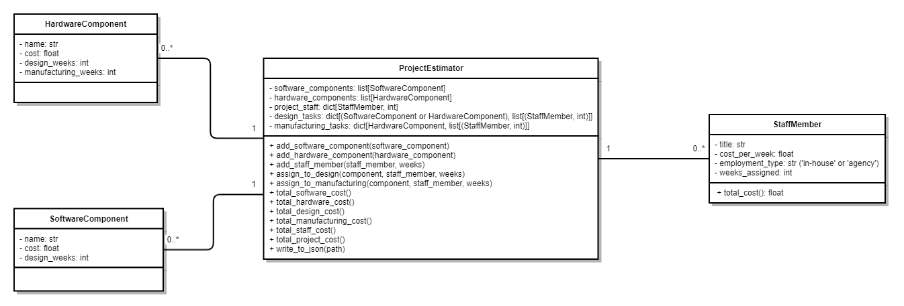
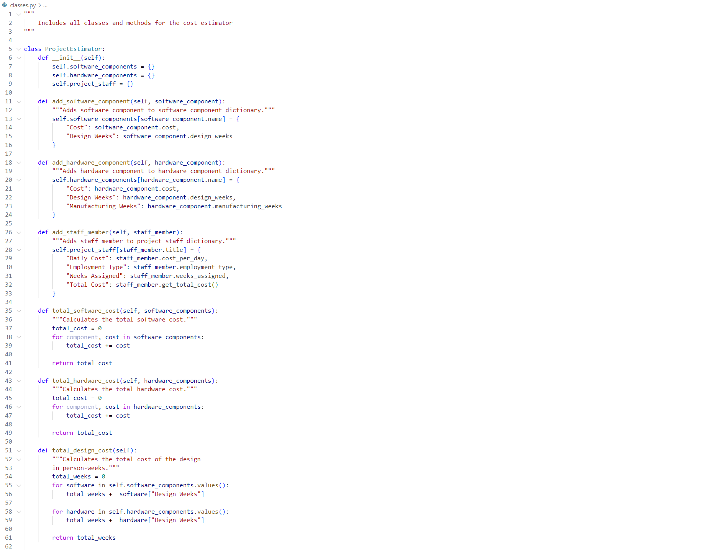
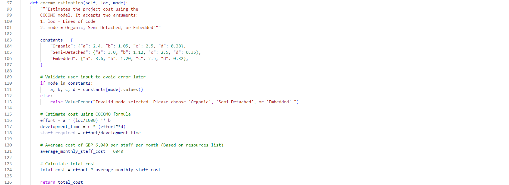
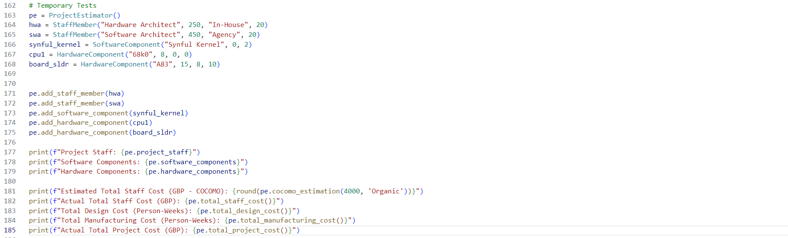

Unit 8: Reflection
This module has been going well. My focus has been on the next assignment. In the most recent team meeting, I volunteered to work on the Python application. I created a UML Class Diagram to showcase what I envision to be the required classes and methods.
Whilst performing all required tasks for this unit, I began programming these classes and methods. Whilst doing so, as expected, the classes and methods slightly changed. This is normal - I look at the class diagram as more of a starting points rather than a law set in stone. I re-worked the code about three times before I was satisfied with its quality and functionality. Here is a little snippt of the code:
As this program is meant to be a "cost estimator" rather than a "code calculator", I attempted to incorporate staff cost estimation using the COCOMO framework and its formulas.
I then wrote some basic "print" tests to ensure that the output was as I expected, and the methods worked correctly. One of my team members is working on the GUI of the application using Tkinter. In the next meeting, we will have a code review, which will allow us to tailor our code to work together (i.e., having buttons that map to methods, etc.).
I'm looking forward to the next few weeks. I expect to learn a lot more about project management in a software engineering context. Based on the previous few months, I also expect that my team will continue to work together as well as we have until now, and complete the second assignment successfully too. Addendum: We've received feedback for our first assignment, which ended up much better than I had expected. This motivates me to work even harder for the second assignment.